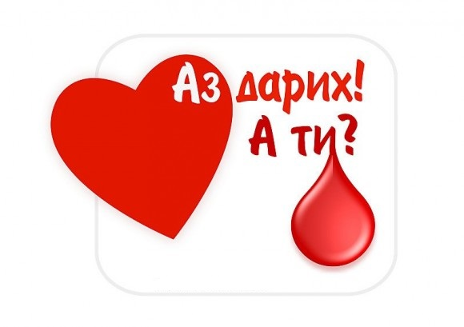
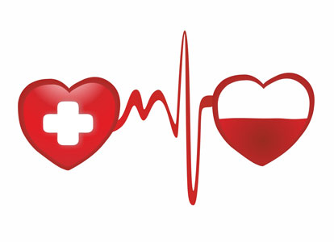

Кръвна група „O“
Кръвна група О е най-старата и често срещана група. Хората с тази кръвна група са универсални дарители, те притежават силна имунна и храносмилателна система. Условно са наречени „месоядни“, тъй като трябва да се хранят предимно с животински протеини, умерено количество мазнини и да ограничат приема на въглехидрати. Те са екстроверти, силни, лидери, уверени, прагматични…
Кръвна група „А“
Прародителите на кръвна група А са били земеделци, консумиращи предимно вегетарианска храна. Поради растителния характер на генетичния им код, храната на хората с тази кръвна група трябва да бъде предимно растителна. Те са интроверти, емоционални и изобретателни…
Кръвна група „B“
Това е кръвната група на щастливците. Хората с тази кръшна група са се появили около 15 хиляди години преди Христа. Заради множеството миграции условно са наречени „чергари“. Тази кръвна група е по-малко специфична и хората от нея могат да се хранят разнообразно. Те са независими, свободомислещи, творчески личности…
Кръвна група „АB“
Това е най-младата кръвната група, възникнала преди около 2000 години, след придвижване и смесване на хора от кръвни групи А и В. Хората от тази кръвна група са консуматори на смесена храна. Тези хора са интуитивни, дружелюбни, емоционални и страстни…

